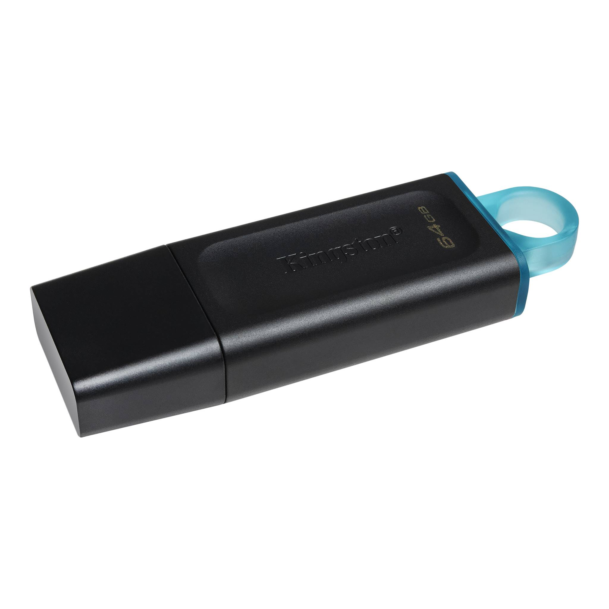
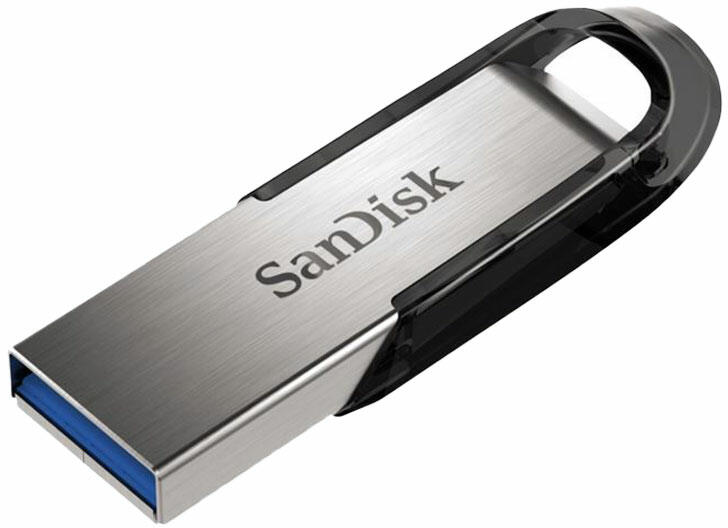

Pendrive
Kingston 64GB DataTraveler Exodia

Műszaki előírások
USB csatlakozó típusa: Normál USB
Kapacitás : 64 GB
USB verzió: USB 3.2 Gen 1
Szélesség: 21 mm
Magasság: 67 mm
Vastagság: 10 mm
Tömeg :11 g
Leírás:
A Kingston DataTraveler® Exodia USB 3.2 Gen 1 teljesítményt kínál a laptopok, asztali számítógépek, monitorok és egyéb digitális eszközök egyszerű eléréséhez. A DT Exodia gyors átvitelt és kényelmes tárolást tesz lehetővé dokumentumok, zenék, videók és egyebek számára.
SanDisk Cruzer Ultra 256GB

Műszaki előírások
USB csatlakozó típusa: Normál USB Kapacitás : 256 GB USB verzió :USB 3.2 Gen 1 Szélesség: 13 mm Vastagság :6.6 mm Tömeg: 20 g
Leírás:
SANDISK Pendrive 139790, Cruzer Ultra "Flair" 256 GB, USB 3.0, 150MB/sec. - a Toner webáruház Számítástechnika > ADATHORDOZÓ > PENDRIVE kategóriájában kedvező 17325-os áron. Rendeljen SANDISK Pendrive 139790, Cruzer Ultra "Flair" 256 GB, USB 3.0, 150MB/sec. terméket tőlünk gyors kiszállítással! 139774 SANDISK CRUZER ULTRA "FLAIR" 3.0, 256GB, 150 MB/s Kiemelt tulajdonságok St lusos USB 3.0 memória Robosztus, masszív kialakítás Ultra gyors adatátvitel max.